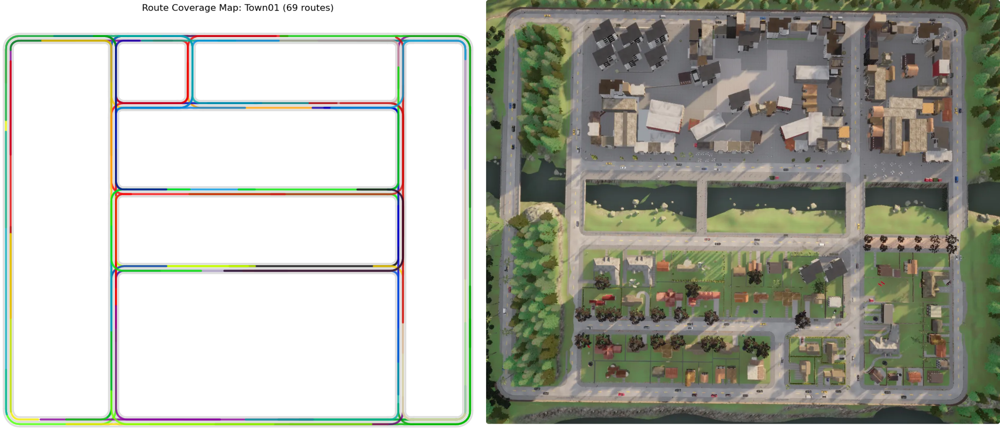
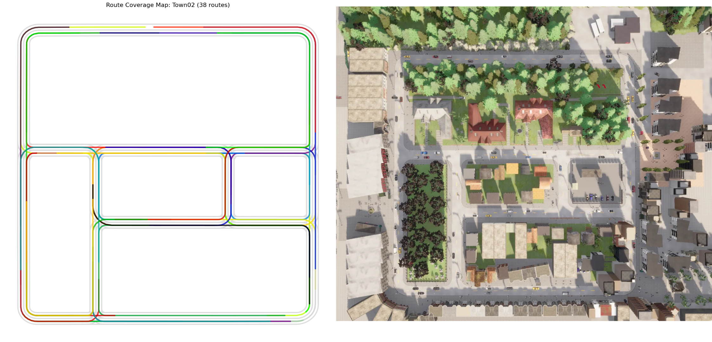
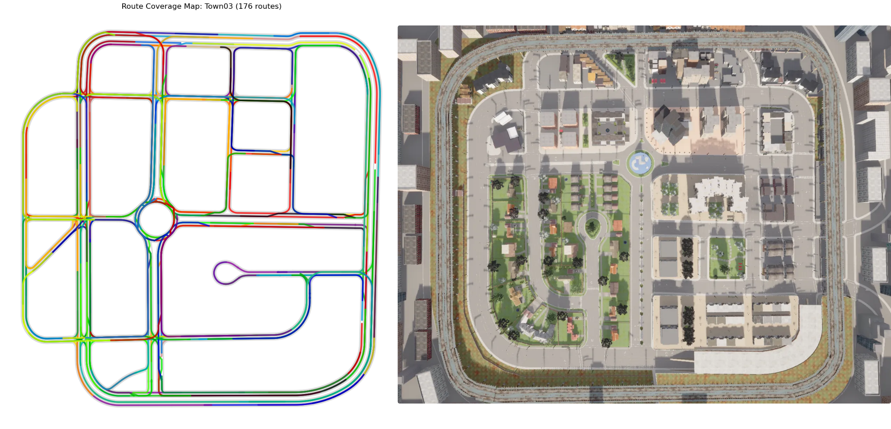
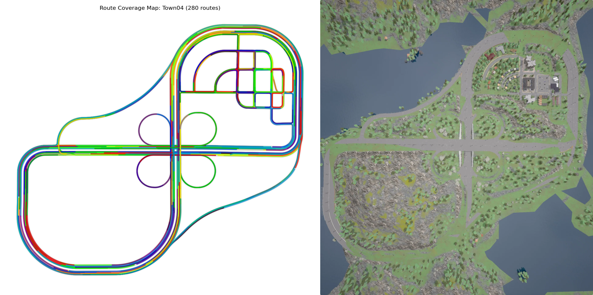
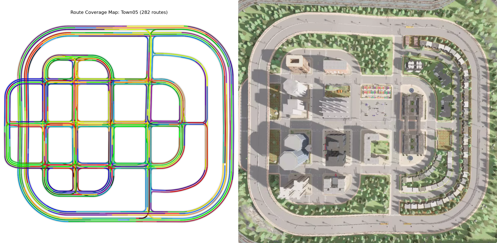
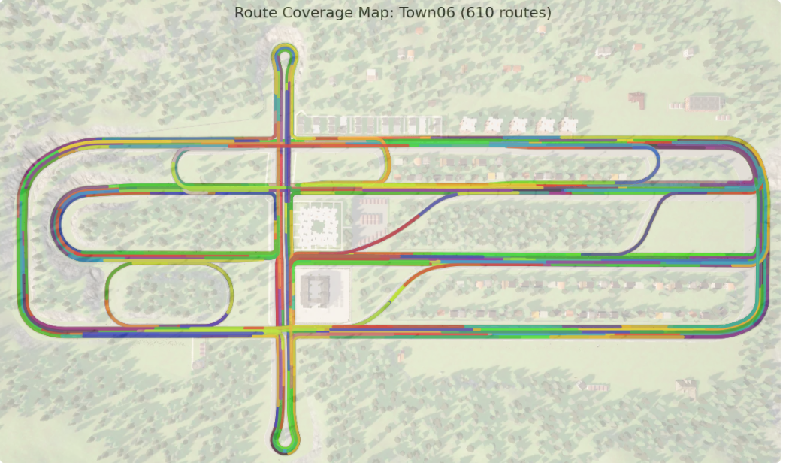
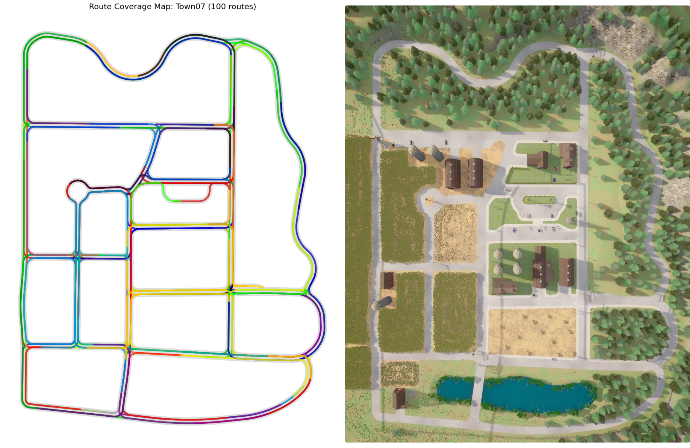
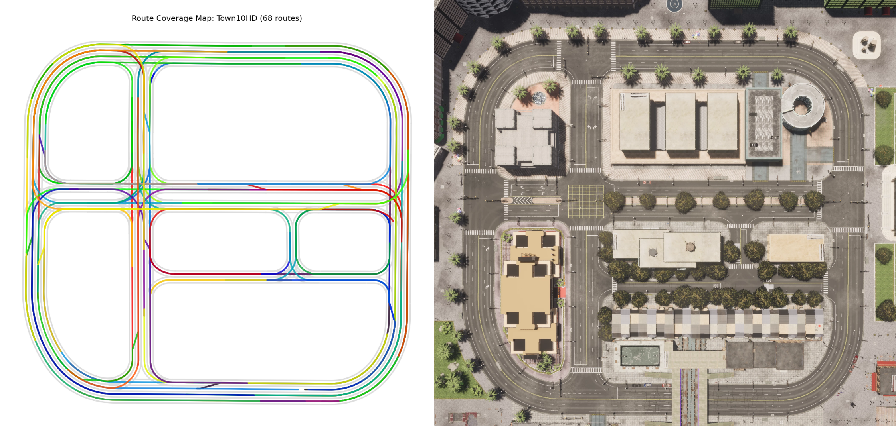
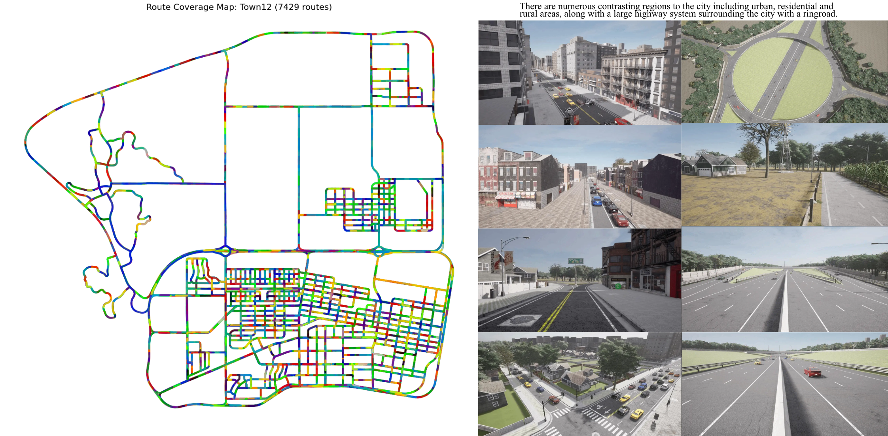
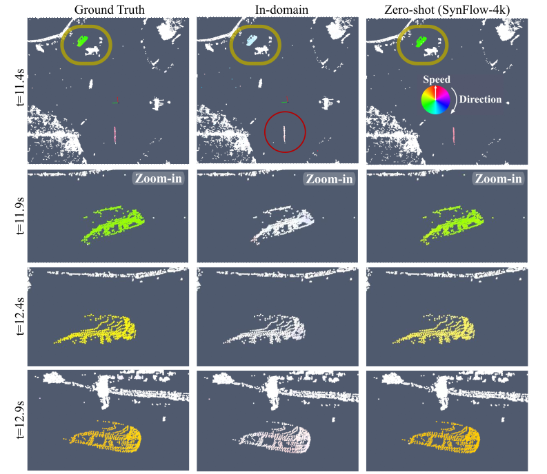

A.1 Overview of Simulated Town Routes
Town 01, 02, 03, 04




Town 05, 06, 07, 10, 12





A.2 SynFlow Dataset: Video Previews
Urban Driving Scenarios
Highway Driving Scenarios
Rural & Suburban Scenarios
B. Qualitative Results: Trained Models
